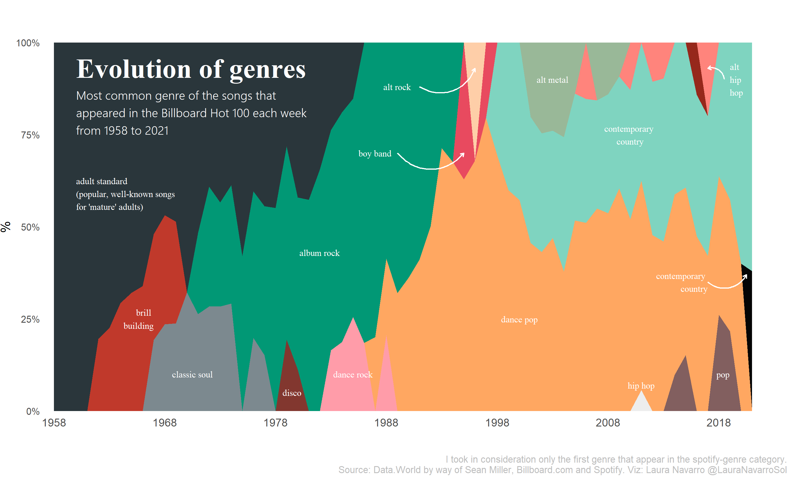
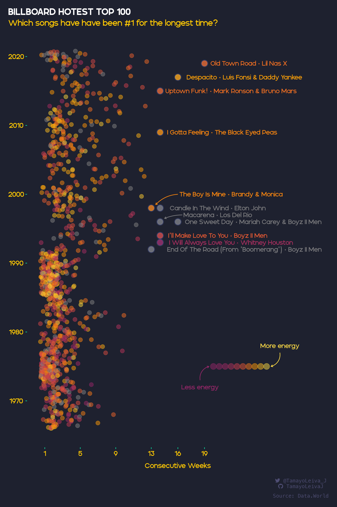
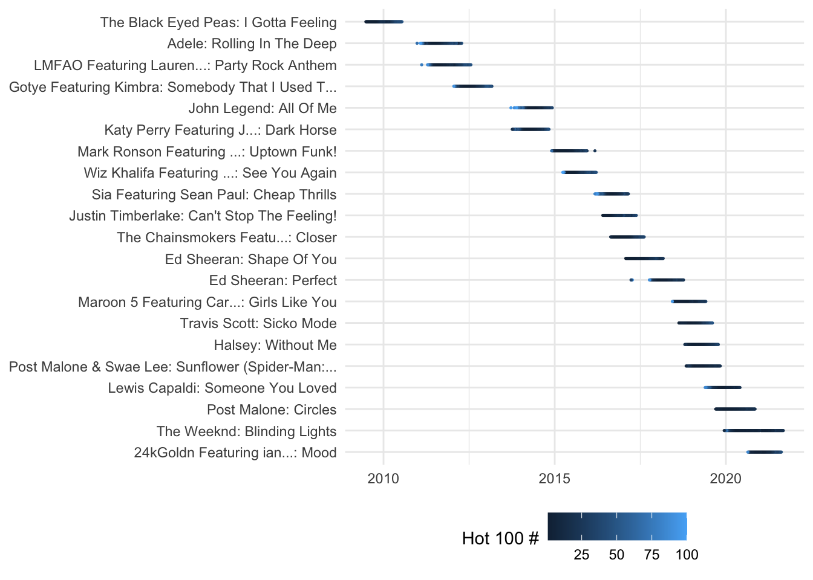

25 Visualization exercise
You saw an example of building a visualization from start to finish in the last chapter. Here, though, we’re going to start from scratch – envisioning what kind of vis might be interesting and then trying to create it. It combines your ability to wrangle data with your imagination, and then we’ll work together to get it done.
In this chapter:
- Load and wrangle a new version of the Hot 100 data
- Draw on a piece of paper the visualization you might want to create
- Wrangle the data to make it possible
- Try to create the visualizatin, either static or interactive.
There are a lot of extra add-ons to the standard ggplot library that comes with the tidyverse, so you may end up having to load them to do what you want.
25.1 The data
We saw the Hot 100 data at the very beginning of your exploration of R. We’re going to use a slightly different version of it to create the visualizations because an older version was matched to the Spotify database to extract certain information from each of the songs.
This data was used as a TidyTuesday dataset in 2021 (scroll down to get the data dictionaries), so it’s a little older than the one we worked on earlier.
This data has two tables:
- The Hot 100 from mid-1958 to mid-2021: https://raw.githubusercontent.com/rfordatascience/tidytuesday/master/data/2021/2021-09-14/billboard.csv
- For any songs that are in Spotify, the characteristicso of the song: https://raw.githubusercontent.com/rfordatascience/tidytuesday/master/data/2021/2021-09-14/audio-features.csv
The dada dictionary shows the characteristics from the Spotify songs, but it’s a little easier to understand if you take a look at Juan De Dios Santos’ post, asking: “Is my Spotify music boring? An analysis involving music, data, and machine learning”[https://towardsdatascience.com/is-my-spotify-music-boring-an-analysis-involving-music-data-and-machine-learning-47550ae931de]
25.1.1 Examples
All of these examples were made with a the version of R and the tidyverse that was used in 2021, so you’ll see a few things in the code that are different, notably the use of %>% instead of |> as the pipe. They are either R scripts (.R extension) or R Markdown (.Rmd extension) , which is the predecessor to Quarto.
TidyTuesday videos
David Robinson, a data scientist at Heap, often creates live demos of his exploration of TidyTuesday datasets – data he’s never seen before. They’re long (usually about an hour), but you can watch him decide what to do and how to do it live. He made this video for the Hot 100 data. (The second half gets into machine learning / AI to make predictions – skip that part if you watch the video).
Here are a few screen shots from that video – they’re closer to our exploratory visualization than the polished ones below;
Visualizing characteristics
These are really polished, publication-quality vis examples made in R, but you can take inspiration from these to do draft versions for the purpose of exploration.
Laurence Horton did a few quick charts to look at the Spotify characteristics.
Laura Navarroshows us what [annotation can do for a chart]((https://github.com/lau-cloud/TidyTuesdaycode/blob/master/Billboard/script.R) . I’m super surprised at the relatively low showing of hip hop, but …

Danielle Navarro wrote a full tutorial aimed at beginners in R , walking through the data to find and visualize all of Britney Spears’ hits. It has the added feature of explaining how to find her using regular expressions! (Yes, they’re both people named Navarro. I don’t know if they’re the same person.)
And Javier Tamayo-Leiva went a little crazy with colors but found an interesting way to visualize the top hits using two dimensions: Number of weeks at No. 1 and the “energy” of the song. Here is the R code for that chart.

25.2 Your turn
You’ve been through a lot, so let’s review the steps you have to take to make a visualization:
Load the data in this case using a read_csv() function. There are two datasets, if you want to use them both.
- Wrangle the data. You will probably need to filter, group, count or otherwise summarize the data. For example, the “Evolution of Genres” probably starts with a dataset by year and genre.
- Decide on the “geom” that you want to use. We haven’t gone through a lot of these yet, so I’m listing some of the common ones below.
- You might want to change themes and color palettes, which is is a little harder. Get the basic visualization down before you start polishing!
You might want to use the https://r-graph-gallery.com/ site for inspiration, which always has the packages required and the exact commands you need make it.
You may end up seeing a lot of code in the examples that start with fct_ – these are turning words into categories that are sorted on a particular element, such as the number of times that they show up. It turns words into categories that have numbers underneath the words so that they are always the same and every possible category is defined. These are called factors and we haven’t really dealt with them. But they’re useful. They depend on loading a library of the tidyverse called forcats
ggplot ( data = df_name,
aes (
x = column_name,
y = column_name,
fill = column_to_define_the_fill,
color = column_to_define_the_lines_and_borders,
size = column_to_define_the_size
)
) +
geom_something ( aes (`columns that only refer to this geom`) )
facet_wrap ( column ~ column ) +
extras ()
25.2.1 Common “geoms”
geom_point()geom_line()geom_bar()geom_area()
Other tutorials and cheat sheets go into much more detail:
The “ggplot” chapter of Rafael A. Irizarry’s Introduction to Data Science
The Posit cheat sheet for ggplot
Kiernan Healy’s “Data visualization: A practical introduction is a whole book on ggplot.
25.3 One quick plot
The very first day we looked at R, I showed you one quick plot based on a Hot 100 dataset that I’d created with just the 21 songs that stayed on the Hot 100 for at least a year list during the 2000s. Now that code may make a little more sense to you
hot100 |>
ggplot (
aes ( x=chart_date, y=hit, color=this_week )
) +
geom_point( size= .25) +
# label the color variable.
labs( color = "Hot 100 #") +
theme_minimal( ) +
theme(axis.title.x = element_blank(),
axis.title.y = element_blank(),
legend.position= "bottom") 
25.3.1 Other sources to learn about ggplot
Cedric Sherer’s list of resources, and his materials for the 2-day workshop at the RStudio Conference 2022